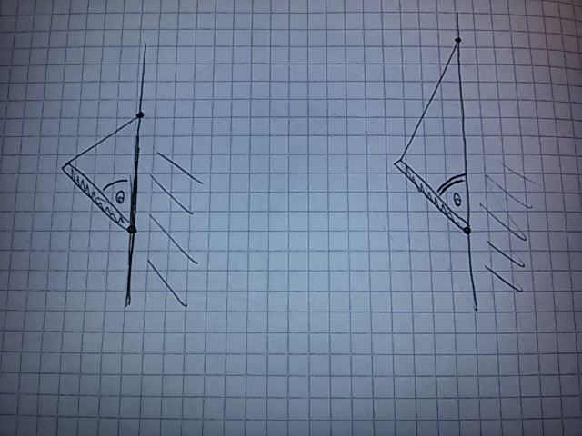

Scugnamì10 feb 2015, 15:01
Abbiamo una sbarretta omogenea di massa \(m\) e lunghezza \(l\) attaccata ad un muro con una delle sue estremità. Per tenerla in equilibrio, all'altra estremità viene attaccato un filo ideale e inestensibile il cui altro capo viene fissato al muro. Sapendo che la sbarretta forma un angolo \(\theta\) con la verticale, determinare la tensione \(T\) la forza normale di reazione rispetto al muro \(N\) e la distanza tra il punto in cui viene attaccata la sbarretta al muro e quello in cui viene fissato il filo.
Simone25610 feb 2015, 16:36
Non manca l'ipotesi tipo sulla lunghezza del filo?
andrea9610 feb 2015, 17:42
Direi di si... tra l altro io l avevo risolto con quell ipotesi senza accorgermi che non c era :lol: :lol: :lol:
andrea9610 feb 2015, 19:22
Potrebbe tranquillamente essere un problema dei provinciali
Scugnamì10 feb 2015, 19:36
Il problema l'ho preso da sessioni di lezioni che hanno organizzato a Napoli per le Olifis e lì l'abbiamo risolto senza ipotesi sulla lunghezza. quindi non ce ne dovrebbe essere bisogno. Ma potrei ricordare male probabilmente o aver copiato male dal quaderno e stare per fare una ben magra figura. So, postate e vediamo.
andrea9610 feb 2015, 20:01
L ho fatto a mente mentre sciavo quindi non ho i conti scritti... comunque rispensandoci hai ragione: il fatto che viene dato l angolo fa si che l equilibrio si possa avere solo per una particolare lunghezza: i fatti oltre alle tre incognite che chiede il problema c è anche la lunghezza del filo e in effetti le condizioni da utilizzare sono 4: equilibrio dei momenti (direi la cosa piu semplice è rispetto all estremo legato alla corda ) , equilibrio delle forze verticali, di quelle orizzontali e il fatto che la corda è inestemdibile
Simone25610 feb 2015, 23:42
Forse sono io che sono fuso ma non mi è chiaro! In ogni caso se dico cazzate son ben felice che almeno imparo qualcosa di meccanica dalle vostre correzioni!! ;)
In ogni caso se la sbarra è fissata con il perno ed è ad un particolare angolo, la fune che la sostiene si appende in un punto con quota maggiore o uguale alla proiezione del punto più alto della sbarretta sul muro! Almeno io così l'ho interpretato! Metto un esempio sperando si capisca:
(P.s. non sfottete se ho detto la cacata del mese :lol:)
-
Allegati
-

- 14236046590041872764854.jpg (132.35 KiB) Visto 7147 volte
andrea9611 feb 2015, 8:55
Eh in effetti era quello che avevo pensato anch io però poi pensando che ci sono 4 condizioni avevo supposto che non fosse possibile equilibrare con qualsiasi corda, a meno che una delle 4 condizione non è contenuta nelle altre tre... purtroppo non avemdo la possibilitá di fare i calcoli fino a stasera non posso verificare queste cose.
P.S. pensate al caso il cui la corda ha la lunghezza minima per arrivare al muro e quindi è perpendicolare al muro... in quel caso non puo essere raggiunto l equilobrio perche niente puo bilanciare il peso
Simone25611 feb 2015, 16:57
In realtà credo di sì! Il perno del muro attaccato con la sbarretta eserciterà una forza verticale uguale al peso!
andrea9611 feb 2015, 17:45
Allora ho capito l inghippo tra quello che dici tu e quello che dico io: io parto dall ipotesi che il muro possa esercitare solo una forza orizzontale, mentre tu consideri che la reazione vincolare possa avere qualsiasi direzione cosi che hai una variabile in piu e se viene data la lunghezza del filo e l angolo hai quattro incognite (tensione componenti orizzonale e verticale della reazione vincolare e punto di attacco del filo ) che trovi con le quattro condizioni. Penso che l applicazioeapplicazione dell uno o dell altro metodo dipenda dal tipo di meccanismo della reazione vincolare: io mi ero immaginato la sbarretta diretta verso il basso e semplicemente appogiata al muro (che quindi puo esercitare solo fvincillforza orizzontale) , un perno vero e proprio invece puo esercitare forze in ogni direzione.
Scugnamì11 feb 2015, 18:16
Uhm effettivamente sono stato poco chiaro: la forza vincolare è normale rispetto alla superficie del muro è basta. Ha solo componente orizzontale. Chiedo scusa per l'ambiguità ma in capa a me tenevo il disegno con il diagrammino delle forze con cui abbiamo fatto il problema e non ho specificato. Sry.
Simone25611 feb 2015, 19:09
Aaaaah quindi è come se fosse appoggiata al muro senza attrito? In tal caso l'unica forza è proprio quella perpendicolare :D
Bene bene mi compiaccio che alla fine nessuno stava dicendo fesserie :lol:
Simone25616 feb 2015, 19:34
Vabbè posto io allora dai!
Sia \(\alpha\) l'angolo che il filo forma con la parete, imponendo l'equilibrio delle forze nelle componenti verticale e orizzontale si ottiene:
\(T \cos \alpha = mg\)
\(T \sin \alpha = N\)
Imponendo l'equilibrio dei momenti rispetto al punto di contatto tra filo e sbarretta si ottiene:
\(2N \cos \theta = mg \sin \theta\)
Dall'ultima equazione si ricava facilmente che
\(N=\frac{mg \tan \theta}{2}\)
E confrontando questa cosa con le prime due equazioni si ottiene
\(\tan \theta = 2 \tan \alpha\)
Grazie a questa utile relazione nella prima equazione si può ottenere T solo in funzioni delle variabili indicate:
\(T=mg\sqrt{1+\frac{\tan^2 \theta}{4}}\)
Inoltre dalle relazioni sugli angoli si vede bene che la proiezione della sbarretta sulla parete è lunga come la distanza cercata:
\(d=l \cos \theta\)
Scugnamì16 feb 2015, 21:27
Ovviamente giusto. Vada pure con il prossimo problema.
Simone25617 feb 2015, 0:32
Scugnamì ha scritto:Ovviamente
Per fortuna! Sono molto bravo a scrivere cagate :lol: